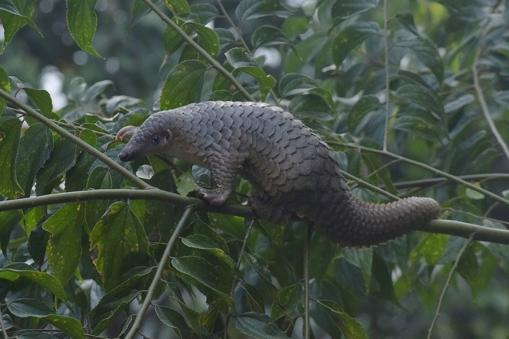
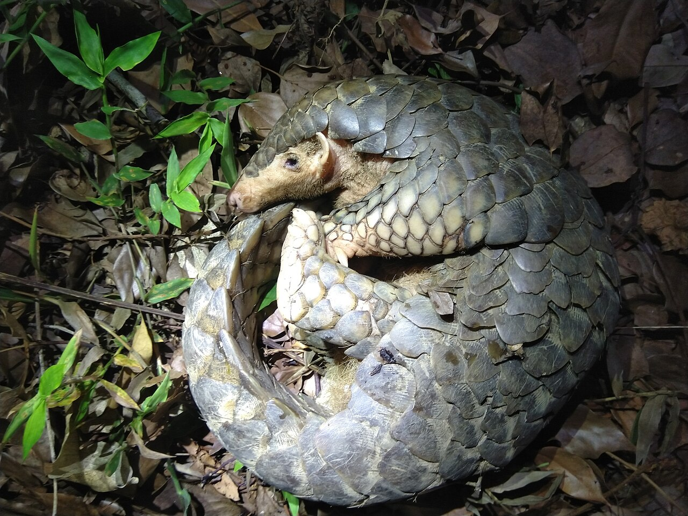
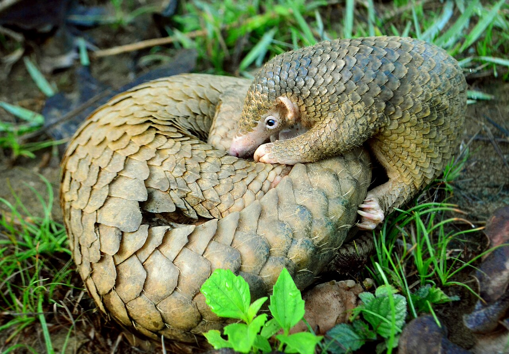
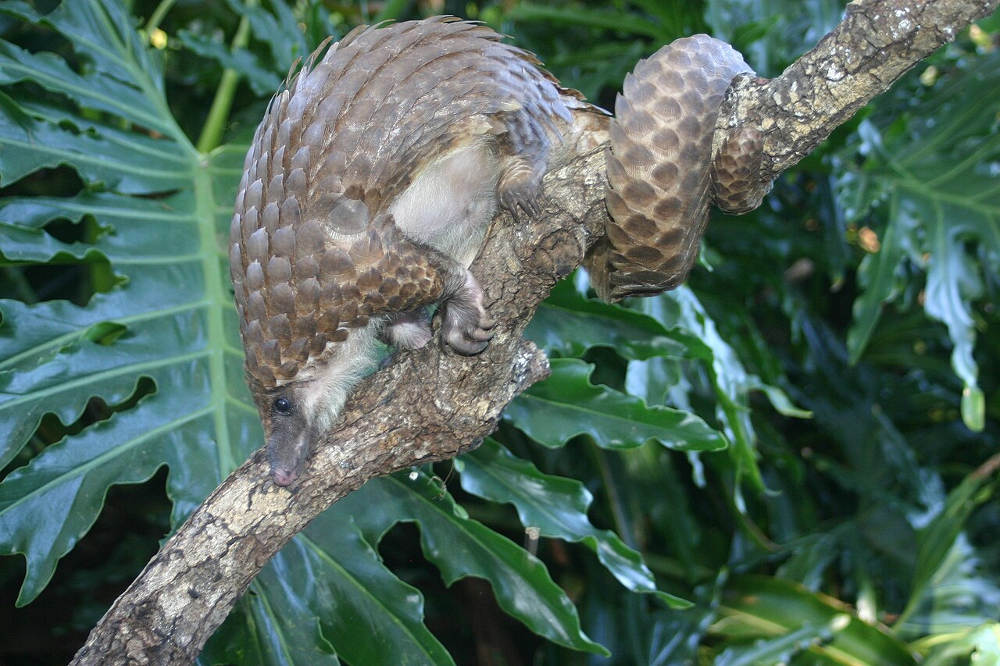
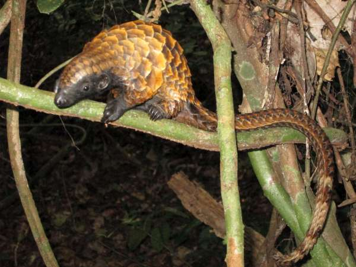
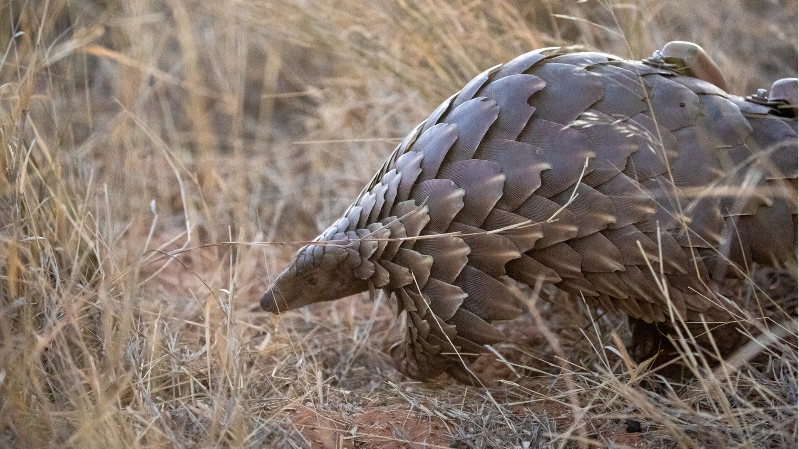
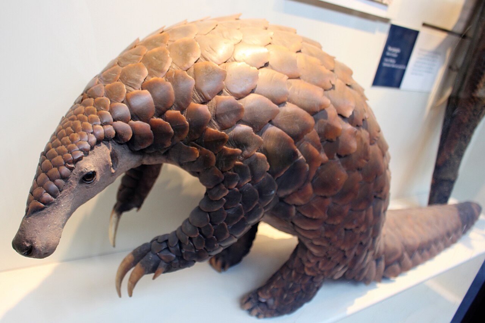
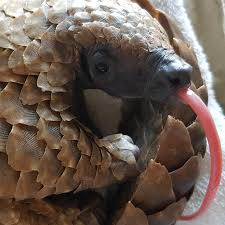

Photo Gallery
Click any photo to view it full size.


Manis javanica) — a critically endangered tree-dwelling species from Southeast Asia.">
Manis pentadactyla) — critically endangered and among the most heavily trafficked species.">
Manis culionensis) in its signature defensive curl. Endemic to the Palawan island group. Photo: Gregg Yan.">
Phataginus tricuspis) — the most common African pangolin, living in the forest canopy of central and west Africa.">
Phataginus tetradactyla) — also called the long-tailed pangolin; the only pangolin species active during the day.">
Smutsia temminckii) — also called Temminck's pangolin; found across eastern and southern African savanna and woodland.">
Smutsia gigantea) — the largest of all eight species, reaching up to 1.4 m long. Found in central and west African forests.">

Videos
Watch pangolins in the wild and learn more about conservation efforts.
Pangolins 101
National Geographic — an overview of all eight species, behavior, and the threats they face.
Are Pangolins About to Go Extinct?
Real Science — a deep dive into why pangolins are in crisis and what it will take to save them.
True Facts: The Pangolin
Ze Frank — a hilarious and surprisingly educational look at pangolin biology and behavior.